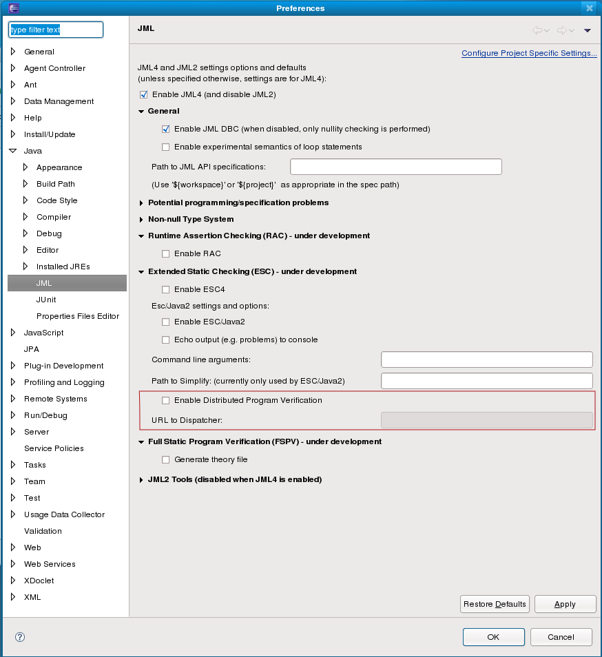
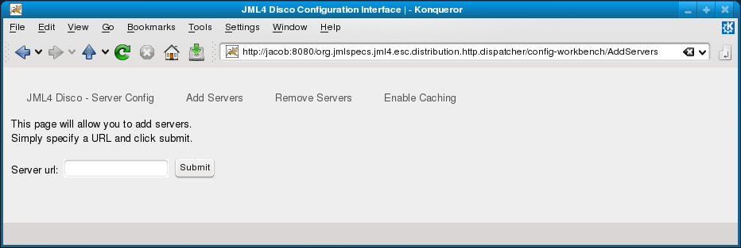
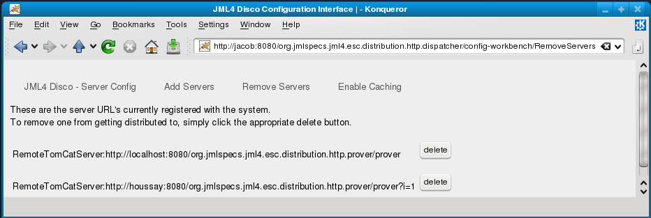
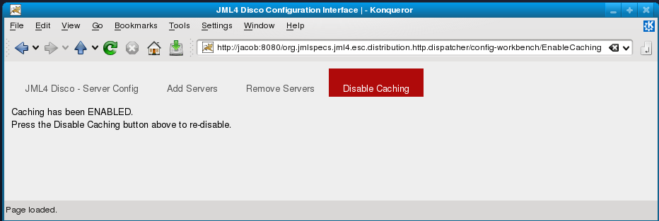
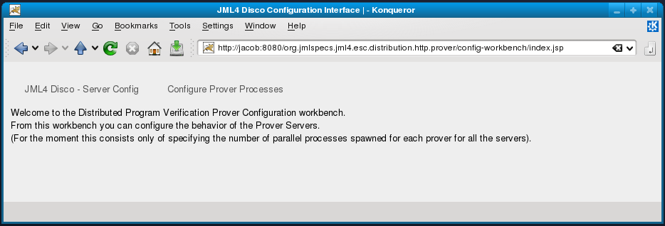
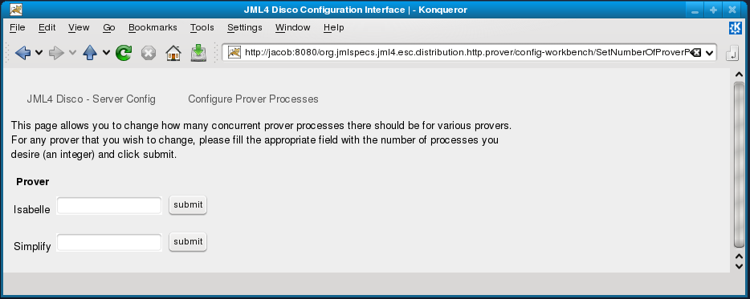
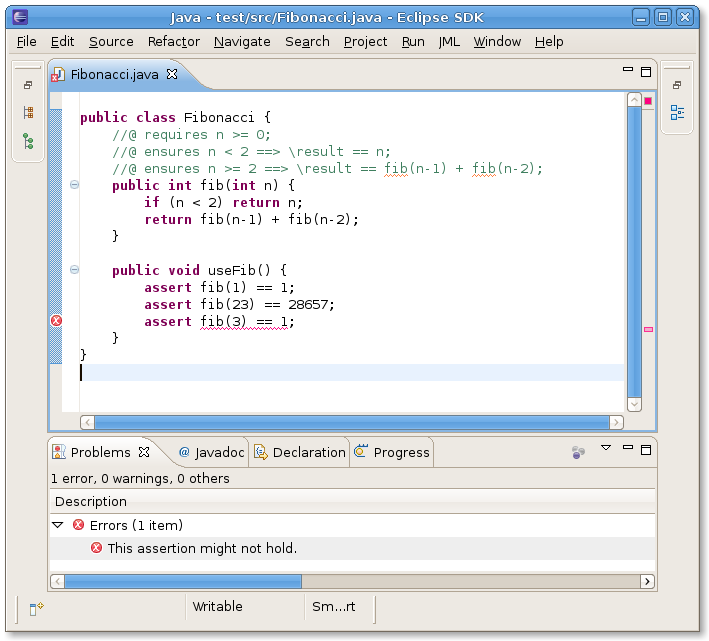
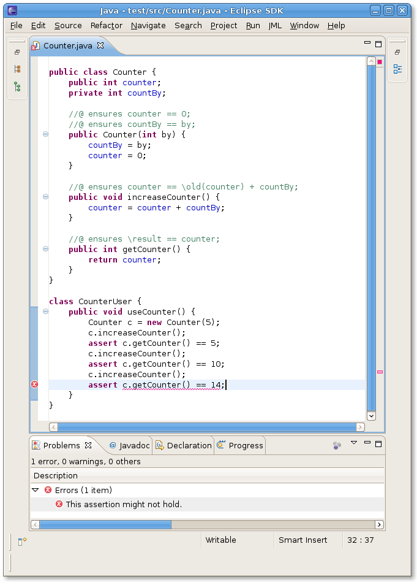
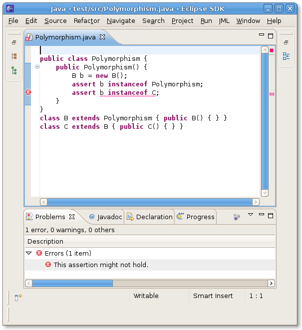

Feature Summary
Table of Contents
1. Introduction
The purpose of this document is to list the features we have completed to give the current status of the project. The document will also discuss the limitations of our current architecture and potential future works.
2. Summary of Features
2.1 Features of JML Distribution
2.1.1 Distributed Discharging of VCs
One of the issues with original JML4 is the poor performance of the proving process. The current JML4 Disco system provides support to verify the code correctness distributively. The source code is broken down into VcPrograms which represent method and further into VCs which represents each possible way that the method can be traversed. The current distributed implementation is not robust; in the event that a server fails, the system does not recover nicely. Neverthless, the implementation is not dependent upon use of tomcat/http/web for communication.
2.1.2 Multi-threaded verification
Originally the verification units were proved sequential despite their independent nature. By implementing multi-threading, practical use was made of the modular properties of the first order verification conditions.
2.1.3 Eclipse UI for Enabling/Disabling Distributed Proving
The current JML4-Disco enhanced Eclipse UI provides the functionality that allows user to choose alternate proving strategy for code verification. The limitation of the current configuration mechanism is the mutually exclusive use of the strategies. If the distributed verification is chosen, other methods of verification will be disabled.

Figure 2.1.3: Shows the option pane to enable and disable distributed proving.
{kind=link}
2.1.4 Web UI for managing Distributed Server components
The Web UI provides an interface for an administrator to manage the configuration of the dispatcher and prover. The dispatcher configuration page provides functionality to add and remove remote provers to the system as well as enabling/disabling server-side caching. The prover configuration page provides functionality to adjust the number of parallel prover processes.

Figure 2.1.4.1: Interface to add new prover server
{kind=link}

Figure 2.1.4.2: Interface to remove existing prover server
{kind=link}

Figure 2.1.4.3: Enabling Caching Mechanism
{kind=link}

Figure 2.1.4.4: Disabling Caching Mechanism

Figure 2.1.4.5: Prover Configuration GUI
{kind=link}

Figure 2.1.4.6: GUI for configuring number of process for each prover
{kind=link}
2.2 Features of Boogie Compiler Extension
2.2.1 JML Requires and Ensures Clauses Support Method Calls
One limitation of the earlier Boogie implementation was that it could not handle an ensures clause having a method call. This functionality is common, especially with recursive code. An example of such recursive code is an implementation of the Fibonacci sequence with JML ensure annotations. The following example code snippet showcases such a java method and and how it would be translated to Boogie:
in Java:
//@ requires n >= 0;
//@ ensures n < 2 ==> \result == n;
//@ ensures n >= 2 ==> \result == fib(n-1) + fib(n-2);
public int fib(int n) {
if (n < 2) return n;
return fib(n-1) + fib(n-2);
}
in Boogie:
type $Ref;
function $fn.tests.esc.A.fib(this: $Ref, a: int) returns (int);
axiom (forall this: $Ref, a: int :: (
((a < 2) ⇒ ($fn.tests.esc.A.fib(this, a) == a)) &&
((a >= 2) ⇒ ($fn.tests.esc.A.fib(this, a) ==
($fn.tests.esc.A.fib(this, (a - 1)) + $fn.tests.esc.A.fib(this, (a - 2)))))));
procedure tests.esc.A.fib(this: $Ref, a: int) returns ($r: int)
requires (a >= 0);
ensures ((a < 2) ⇒ ($r == a));
ensures ((a >= 2) ⇒ ($r == ($fn.tests.esc.A.fib(this, (a - 1)) + $fn.tests.esc.A.fib(this, (a - 2)))));
{
var b: int;
var c: int;
if (a < 2) {
$r := a;
return;
}
call b := tests.esc.A.fib(this, (a - 1));
call c := tests.esc.A.fib(this, (a - 2));
$r := (b + c);
return;
}
Note that in Boogie, procedures can only be called as statements, which are only valid inside of procedures. Therefore, to properly translate the JML ensures clause, a Boogie "function" of the the same name as the procedure is added with prefix $fn.. This function can be called as an expression, and asserts that the ensures clauses all hold true (using an axiom). This solution was only made possible by using a Boogie AST to reorder and insert function nodes before printing the output. More information on how nodes are traversed can be found in the Logical View.
In the Eclipse UI we can see how Boogie can be used to prove the Fibonacci sequence:

Figure 2.2.1: Static verification of Fibonacci method in Eclipse IDE using JML4/Disco
{kind=link}
2.2.2 Field Initialization for Simple (Non-Array) Types
Another significant milestone was completing the ability to initialize field values. In Boogie, global variables (any variable not defined within a procedure) can only be assigned to from within a procedure. As such, to support implicit field initialization whenever a object is instantiated, a new procedure for each class must be added (the fully qualified class name with the $initFields suffix) that performs such assignments. This method must also be called directly by all constructors before performing any other actions.
By using a reordered AST over the original Boogie implementation which directly outputted Boogie source after visiting the Java AST, it becomes considerably easier to inject new procedures and assignments without affecting the source code. An example field declaration with initialization can be seen in the following example:
public int counter = 2;
public Counter() {
//@ assert counter == 2;
}
The above code is converted into Boogie as:
type $Ref;
var Counter.counter: [$Ref] int;
procedure Counter.$initFields(this: $Ref)
modifies Counter.counter;
ensures Counter.counter[this] == 2;
{
Counter.counter[this] := 2;
}
procedure Counter.Counter(this: $Ref)
{
call Counter.$initFields(this);
assert Counter.counter[this] == 2;
}
In addition to implicit/explicit class attribute initialization we also support common Java usage of fields. The following screenshots showcase some of basic field usage.

Figure 2.2.2: Statically verifying modified fields in Eclipse IDE using JML4/Disco
{kind=link}
2.2.3 One-Dimensional Array Support
Support for basic arrays of primitive types arrays of objects have been added. Currently only one-dimensional arrays are supported. In the future it would be possible to extend support to include multi-dimensional and jagged array types by implementing the following AST nodes JN49 and JN55. This should not have serious impact on the current design. There is currently untested support for multi-dimensional array references if the declarations mentioned above are implemented. The complicated part of implementing such arrays in Boogie would be describing the types of all the elements in the arrays, as this has proved more difficult than expected.
2.2.4 Basic Support for Polymorphism
Using Boogie's type system, the instanceof expression in Java was implemented. This allows support for polymorphism and static checking of subclass types that was previously unsupported. The following screenshot shows an example of how this can work:

Figure 2.2.4: Statically verifying polymorphic types in Eclipse IDE using JML4/Disco
{kind=link}
2.2.5 Block Local Support
Block locals are supported in JML4/Disco. This has proved problematic since Boogie requires all locals to be declared at the top of the procedure and has no support for inner blocks. Therefore, any unique variable names local to a block would end up being non-unique in a Boogie procedure. To deal with this, a RemoveLocal statement added to the Boogie AST during traversal of the Java AST whenever a block ends. Then, if during output, a RemoveLocal is traversed, the relevant local declaration is removed from the Boogie AST. This allows each variable to be unique during traversal. This design has a flaw, however, that destructively modifies the Boogie AST when toBuffer is called. This means that toBuffer cannot be called twice on a Procedure node. Ideally this solution should be refactored in the future to allow for multiple traversals without destroying the AST.
2.3 Limitations of the Boogie Compiler Extension
More limitations of the code coverage of the Java/JML languages can be found in the Java Coverage Traceability document.